固定源码 aff9dd8 · 构建 0e3551c8d5eb。真实素材替换、住宅布局、楼层观看、完整保存和独立移交。角色实际使用留待统一接入。
正常1×，40.4秒（含初始加载）。整栋使用轻量外观与竖向侧剖面；选层后加载真实场景，单间可自由查看。
下载完整可编辑移交包 · 版本与检查记录 · 实际浏览器检查 · 脱离制作目录检查
压缩包解压后执行 node serve.mjs，打开打印的地址，加载 data/save.json。内含源码、锁文件、生产参数和继续编辑命令。
16房新平层、老板专属方案和影响力仍是后续设计；当前大楼显示部分配置，不宣称完整游戏业务或普通电脑性能已通过。
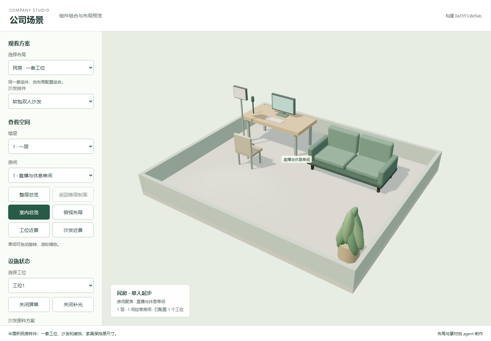
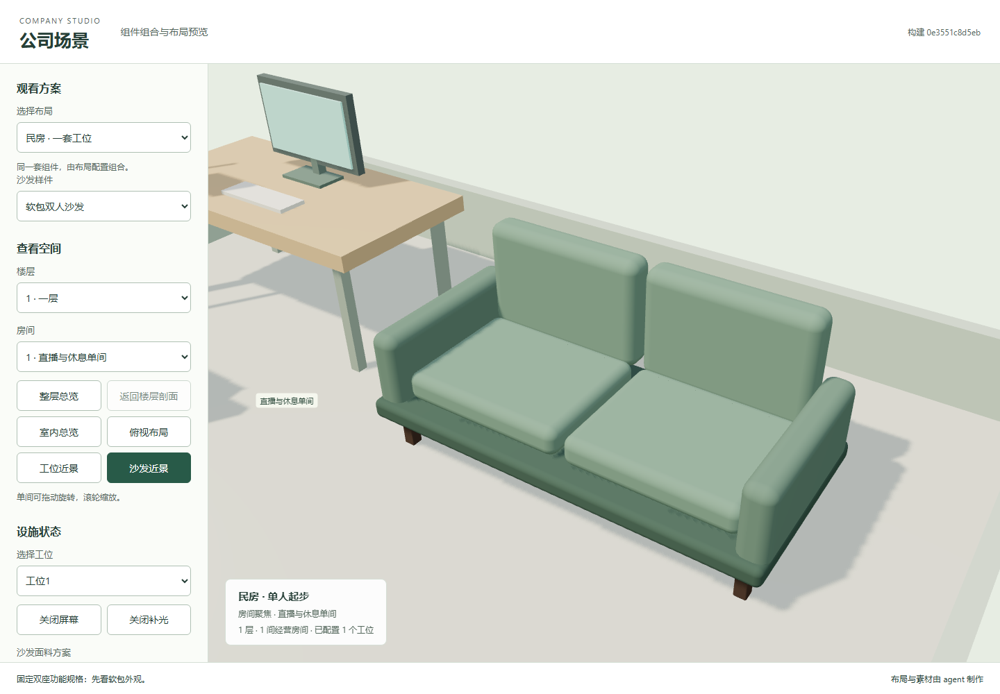
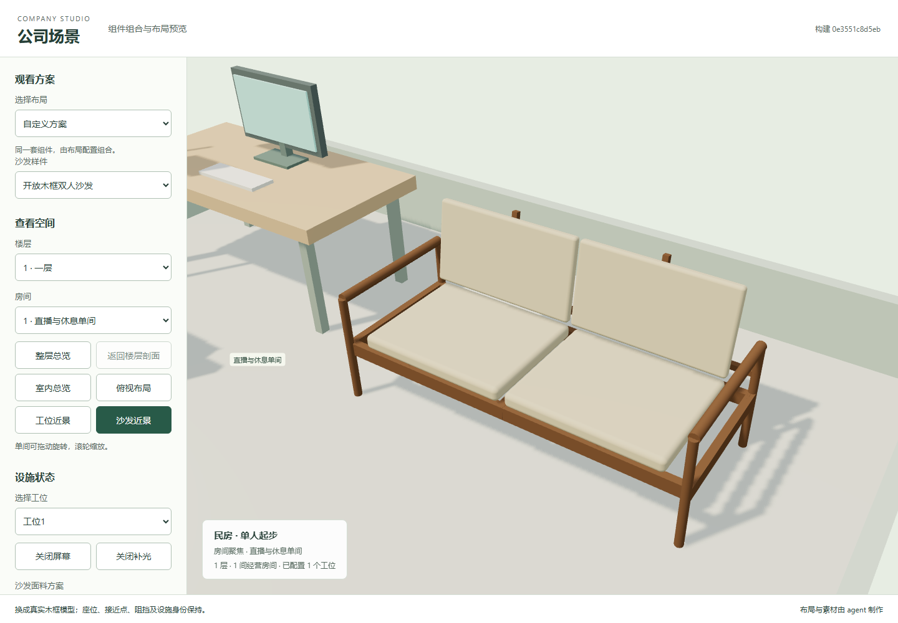
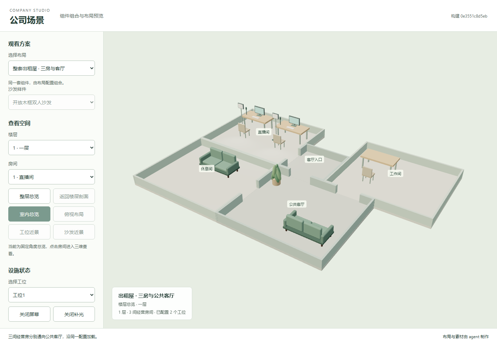
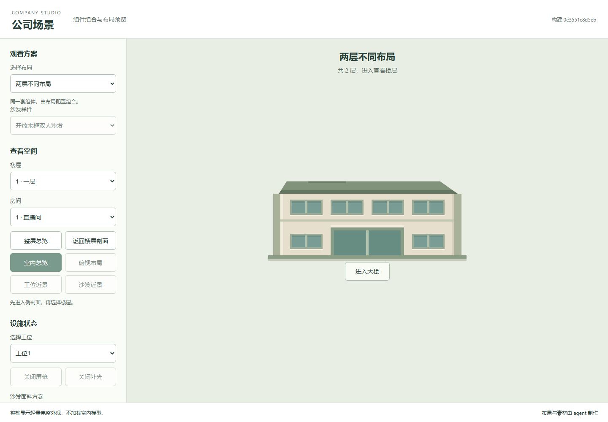
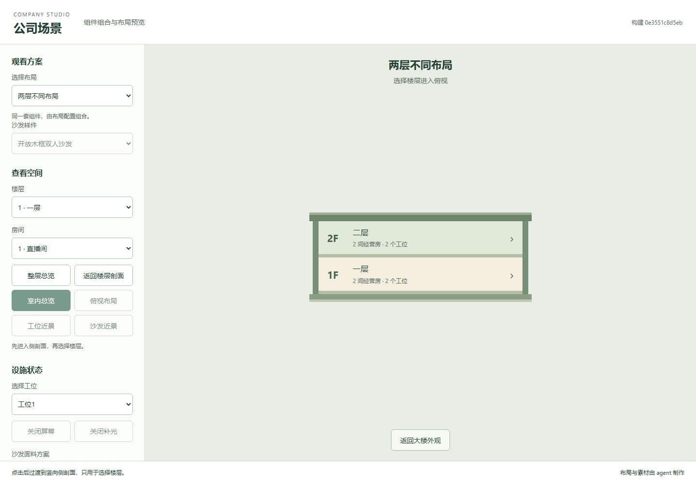
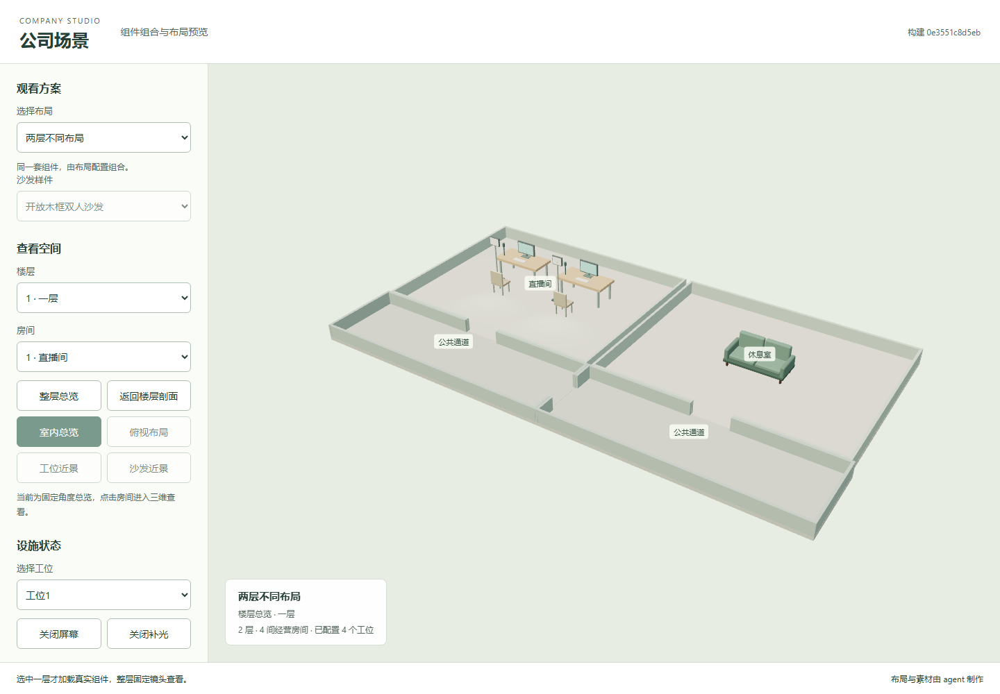
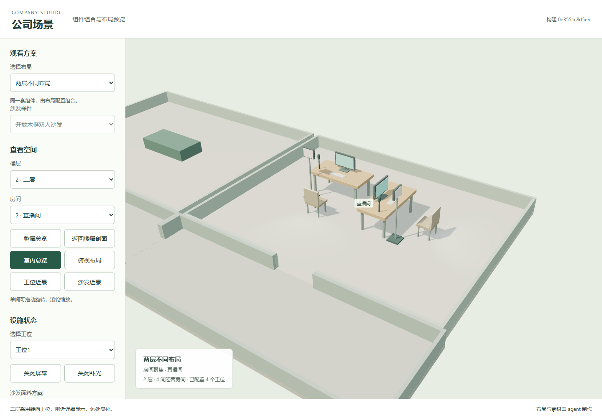
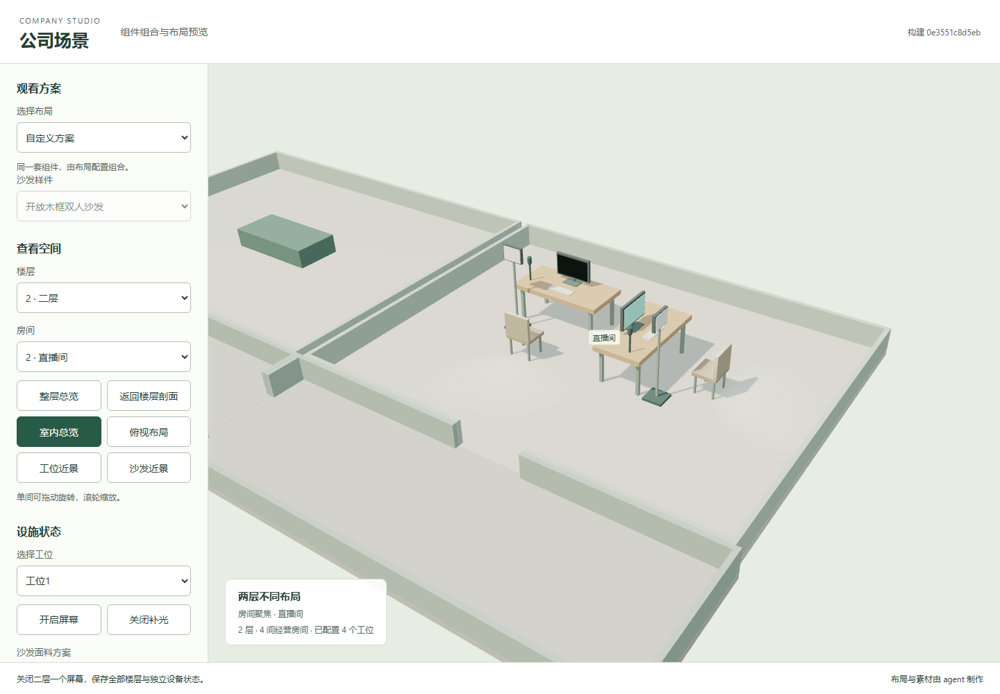
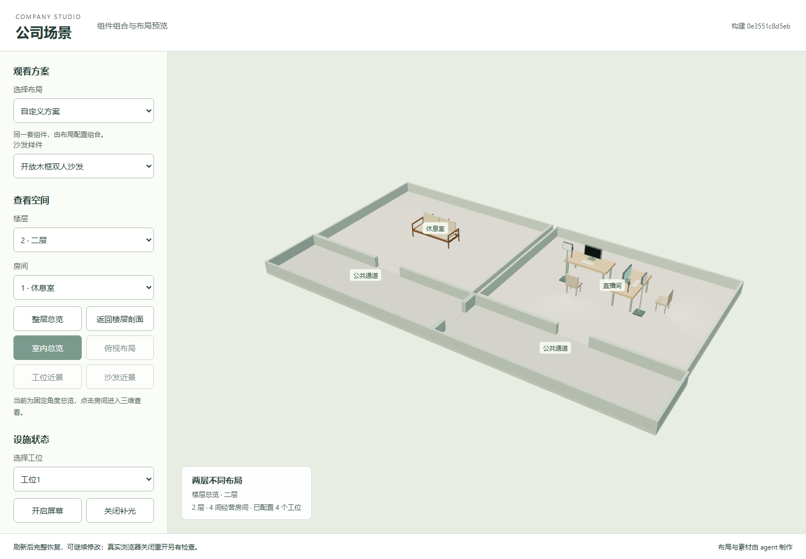
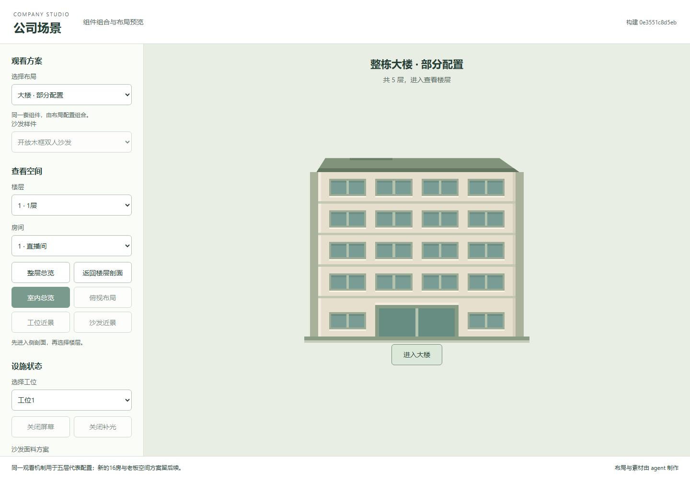
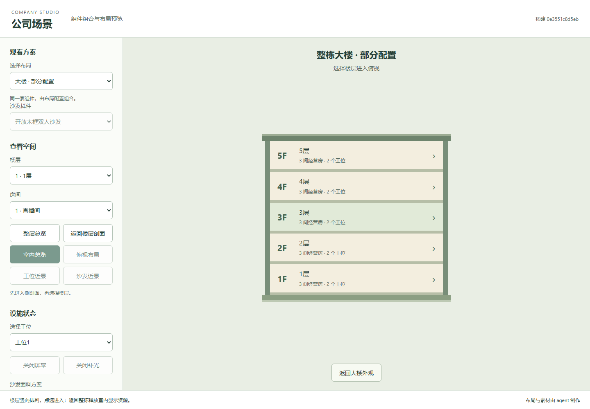